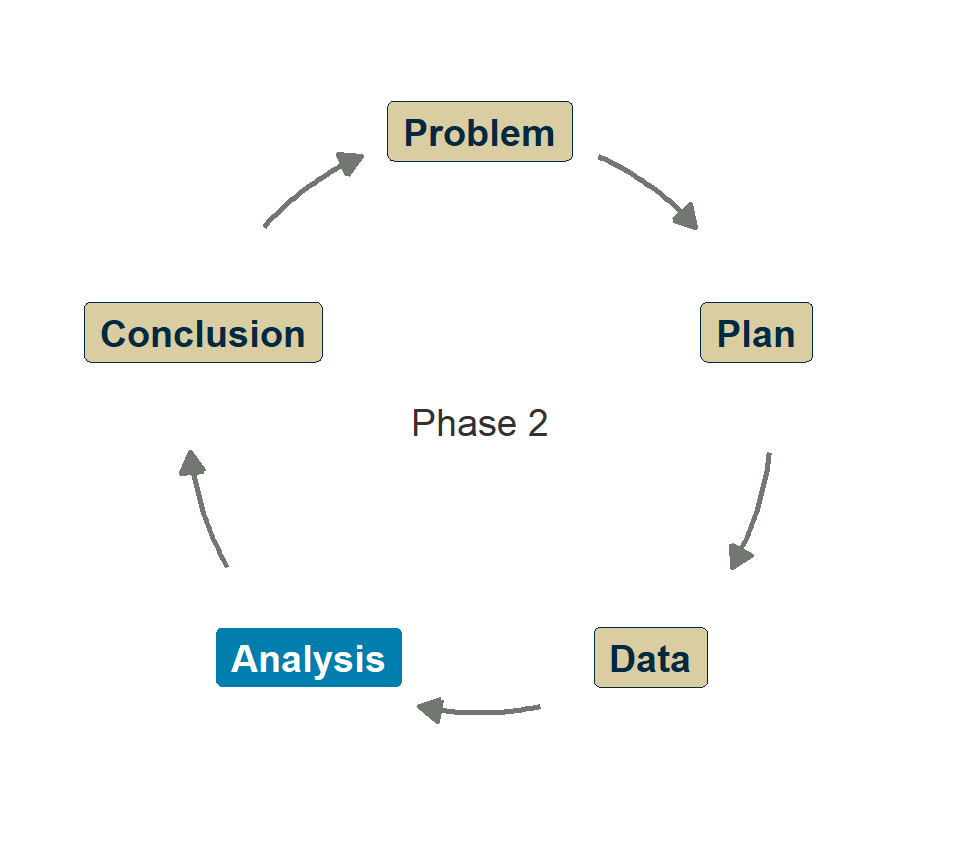
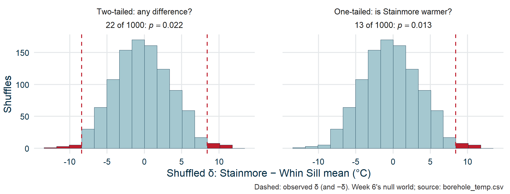
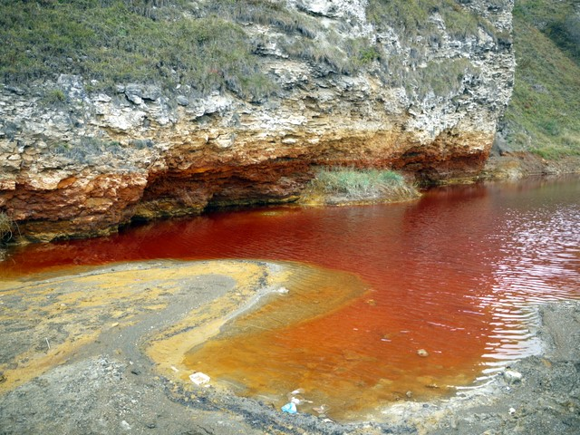
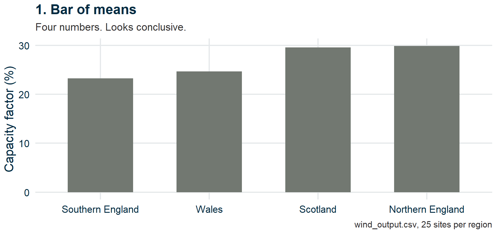
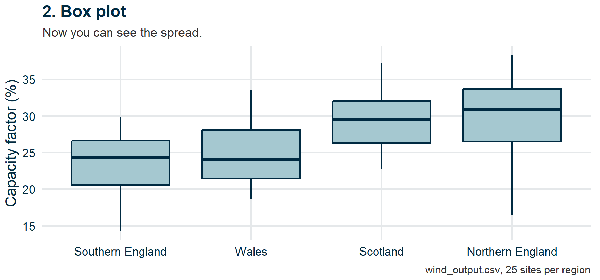
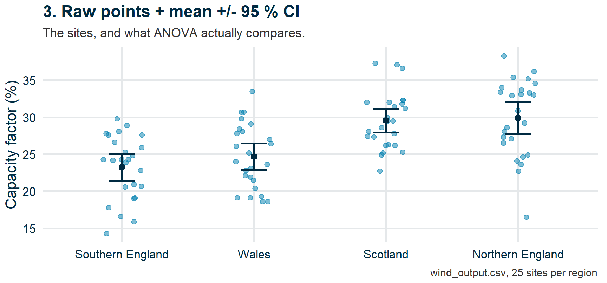
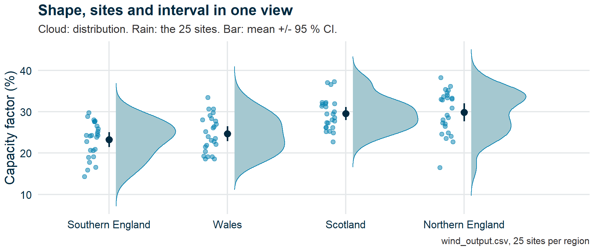
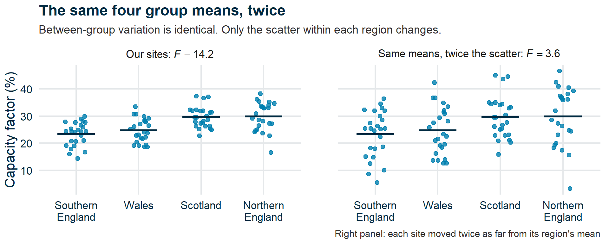

Comparing groups
Research Skills — Week 8
Today's exercises
Recap
11:05
Recap
- Bias bingo
- One tail or two?
- Why not just do lots of t-tests?
- How many tests?
- ANOVA
- Run an ANOVA
- How big?
- HolmesCo’s report card
- Wrap-up
Where we are
11:05
Week 6: t-tests for two groups, and effect sizes. Last week: models.
Back to tests: what happens when you have more than two groups — and more than one test.
Questions?
11:05
Submit questions:
PollEv.com/geol
text geol to 07480 781235
Bias bingo
11:08
- Recap
Bias bingo
💬 Homework recap
- One tail or two?
- Why not just do lots of t-tests?
- How many tests?
- ANOVA
- Run an ANOVA
- How big?
- HolmesCo’s report card
- Wrap-up
How did you do?
11:08
The Economist, 23 September 2026: “Many surgical interventions are little better than placebo”.
Hands up: a row? Two rows? Full house?
Which square was hardest to fill?
Why did surgeons think it worked?
11:10
Patients felt better after surgery. Three stories fit that:
- The operation fixed the problem
- The body healed on its own
- Being cared for made them feel better (placebo)
Pooling 100 surgical trials: about two-thirds of the improvement was stories 2 and 3.
How do you separate them?
11:11
| Compare | Isolates |
|---|---|
| Surgery vs sham surgery | the operation itself |
| Sham surgery vs no treatment | the placebo |
| No treatment, before vs after | natural recovery |
One 2002 trial splashed water into a dish so the sham sounded right.
Why were surgeons so sure?
11:13
- Patients who come back for check-ups are mostly the ones who got better
- Those who come back don’t want to disappoint their surgeon
- Surgeons’ predictions of who will improve: no better than a coin toss
The square most people missed
11:15
Scans find tears and “abnormalities” in knees, backs and shoulders.
The same abnormalities are common in people with no pain at all.
How plausible was this before we tested?
Now make it geological
11:16
What does each of these look like in a geological investigation?
| Surgery | Geology |
|---|---|
| Only recovered patients return | Dry holes and failed slopes never get written up |
| Patients heal anyway | Groundwater recovers once pumping stops. Did the remediation work? |
| Abnormal scans in painless knees | Faults are everywhere. Is this one why the ground subsided? |
| Surgeons have no uncertainty | Experts disagree on the same seismic section |
In geology nobody says the word “placebo”. Would you spot these?
One tail or two?
11:18
- Recap
- Bias bingo
One tail or two?
🎓 Refresher
- Why not just do lots of t-tests?
- How many tests?
- ANOVA
- Run an ANOVA
- How big?
- HolmesCo’s report card
- Wrap-up
One tail or two?
11:18

HolmesCo’s latest results
11:21
⚒️ HolmesCo
Geological Consultants Since 2019
“Ironing Out Your Problems”™
Iron Remediation Results
As advised, we sampled upstream and downstream of every treated site, and tested a competitor’s product too.
- FerroGone: significant difference, p = 0.03
- ClearFlow: no significant difference, p = 0.07
FerroGone: the only proven choice.
Mine water: only better counts
11:23

Pool stained with iron, Blast Beach, Seaham: Andrew Curtis / Geograph, CC BY-SA 2.0
Orange water from old coal workings: a treatment scheme should cut its iron.
Has iron fallen? If it don’t cut iron it don’t work: if it increases iron I’m definitely not paying for it!
The other tail isn’t interesting: one-tailed.
Define your queston before you ask it.
Switching to one-tailed after a two-tailed fails is a second test – and a second chance for a false positive.
Why not just do lots of t-tests?
11:26
- Recap
- Bias bingo
- One tail or two?
Why not just do lots of t-tests?
🎓 Concept block 1
- How many tests?
- ANOVA
- Run an ANOVA
- How big?
- HolmesCo’s report card
- Wrap-up
The problem
11:26
Three groups (e.g., wind farms in three regions).
You could run three pairwise t-tests: A vs B, A vs C, B vs C.
Each test, on its own, has a 5 % chance of a false positive.
Run 20 tests where nothing is going on. How often do you “find” something?
Chance in action
11:30
HolmesCo’s mineral survey
11:35
⚒️ HolmesCo
Geological Consultants Since 2019
“Leave No Stone Untested”™
Press Release — Multi-Element Anomaly Discovered!
“We tested soil samples from 20 sites for enrichment in 20 elements. We found statistically significant enrichment (p < 0.05) for three elements at one site!”
If there’s truly nothing there, how many significant results would you expect by chance?
The answer
11:39
20 × 20 = 400 tests at α = 0.05
Expected false positives: 20, about one per site.
With nothing there at all, some site scores three or more four times in five.
The “discovery” is what noise looks like.
How many tests?
11:43
- Recap
- Bias bingo
- One tail or two?
- Why not just do lots of t-tests?
How many tests?
💬 Exercise 1
- ANOVA
- Run an ANOVA
- How big?
- HolmesCo’s report card
- Wrap-up
Your project
11:43
How many comparisons are you planning to make?
If you run all of them at α = 0.05, what’s your family-wise false positive rate?
Formula: 1 − (1 − α)k where k = number of tests
ANOVA
11:50
- Recap
- Bias bingo
- One tail or two?
- Why not just do lots of t-tests?
- How many tests?
ANOVA
🎓💻 Concept block 2
- Run an ANOVA
- How big?
- HolmesCo’s report card
- Wrap-up
One test for multiple groups
11:50
ANOVA (Analysis of Variance) asks:
“Does any group differ from the others?”
Without specifying which.
Same data, four ways
11:50
Before any test: how you show a comparison changes what you see.
Four regions, same 100 sites, same order (low mean to high) — shown four different ways.
Same data, four ways: the bar
11:51

Same data, four ways: the box plot
11:52

Same data, four ways: the raw points
11:53

Takeaway: a bar of means can hide a bad idea; the points behind it usually don’t.
Same data, four ways: the raincloud
11:54

w08-groups-raincloud.R · after Heiss (2026)
From δ to F
11:55
Week 6: two groups, one number. δ = difference between the means.
Four groups: six differences. Testing each is the problem we just met.
One number instead:
\[F = \frac{\text{how far the group means spread}}{\text{how far sites spread within their group}}\]
“Relative to within”
12:00

The null world for F
12:05
Corrections for multiple comparisons
12:10
| Method | How | When |
|---|---|---|
| Tukey’s HSD | All pairwise, designed for ANOVA | After a significant ANOVA |
| Bonferroni | Divide α by number of tests | Simple, conservative, any context |
Both reduce the false positive rate by being stricter about what counts as significant.
Run an ANOVA
12:15
- Recap
- Bias bingo
- One tail or two?
- Why not just do lots of t-tests?
- How many tests?
- ANOVA
Run an ANOVA
✏️💻 Exercise 2
- How big?
- HolmesCo’s report card
- Wrap-up
In WebR
12:15
Provided dataset: wind farm output in four regions.
- Visualize with violins
- Run
aov() - Is it significant?
- Run
TukeyHSD()— which pairs differ? - Write a one-sentence conclusion
How big?
12:28
- Recap
- Bias bingo
- One tail or two?
- Why not just do lots of t-tests?
- How many tests?
- ANOVA
- Run an ANOVA
How big?
🎓 Concept block 3
- HolmesCo’s report card
- Wrap-up
For ANOVA: η² (eta-squared)
12:28
The share of the variation explained by the groups: Week 7’s R², for a categorical predictor.
| η² | Interpretation |
|---|---|
| 0.01 | Small |
| 0.06 | Medium |
| 0.14 | Large |
Always report both the p-value and an effect size.
A policy-maker needs to know “how big?” — not just “is it real?”
HolmesCo’s report card
12:33
- Recap
- Bias bingo
- One tail or two?
- Why not just do lots of t-tests?
- How many tests?
- ANOVA
- Run an ANOVA
- How big?
HolmesCo’s report card
✏️💬 Integrative exercise
- Wrap-up
Three test results
12:33
⚒️ HolmesCo
Geological Consultants Since 2019
“Significantly Ahead of the Field”™
Quarterly Technical Summary
| Comparison | Result | HolmesCo says | |
|---|---|---|---|
| 1 | 15 site characteristics vs wind capacity factor, 40 farms | One significant: south-west aspect, p = 0.03 | “Face all turbines south-west” |
| 2 | Borehole temperature, 1000 in Durham vs 1000 in N. Yorkshire | p < 0.001, d = 0.15, CI 0.06 to 0.20 °C | “Prioritize Durham” |
| 3 | Solar degradation, 20 mono vs 20 poly panels | p = 0.09, d = 0.55, CI −0.02 to 0.28 points/yr | “No difference” |
Full report: geol-skills.github.io/materials/holmesco-report-card.html
For each: which idea from today does HolmesCo ignore? Rewrite the claim as one honest sentence.
Wrap-up
12:38
- Recap
- Bias bingo
- One tail or two?
- Why not just do lots of t-tests?
- How many tests?
- ANOVA
- Run an ANOVA
- How big?
- HolmesCo’s report card
Wrap-up
Key points
12:38
- Multiple tests inflate false positives — correct for them
- ANOVA compares multiple groups in one test; TukeyHSD finds which differ
- Significance ≠ importance — always report effect sizes
- η² is R² for groups: how much of the variation they explain
Any questions we missed?
12:38
Submit questions:
PollEv.com/geol
text geol to 07480 781235
Next time
12:43
Application session: “Deepening your analysis”
Apply ANOVA or refine your t-test with effect sizes and assumption checks.
Suggested reading
12:43
- Krzywinski & Altman, “Comparing samples—part II”, Nature Methods (2014). Reading list
- Krzywinski & Altman, “Analysis of variance and blocking”, Nature Methods (2014). Reading list
Attendance
12:43
New login? Drag Attendance QR to the favourites bar.